2027 KOL 雙款桌曆｜選角板 R1
建議稿，未經 Penny 拍板。本輪沒有生成任何圖片、沒有花 credits、沒有下單或聯絡廠商。所有圖片都是 repo 內既有原檔的縮圖。
素材 ID = A-＋型錄同一套 djb2 雜湊（對得上型錄衍生檔 g_xxxxxxx）。「原圖」連到 GitHub 上的原檔（需 repo 權限）。碰撞距離出自 review/soul_pilot/_screen19_v1/screen19_pairs.json（只量過 Batch 3 的 19 位，門檻 ≤0.0220）。
一、12 位主角同版面總覽（暫定月份順序）
每格上：直式滿版裁切；下：橫式半版裁切。裁切框為本輪假設，見下方第三節。
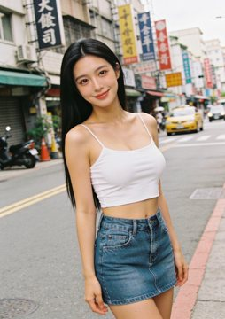
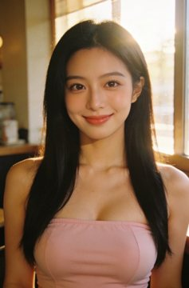
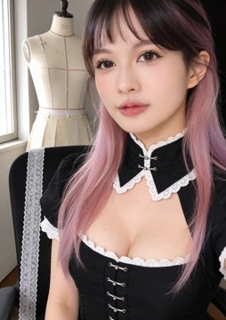
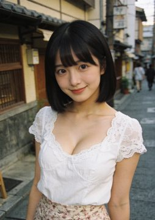
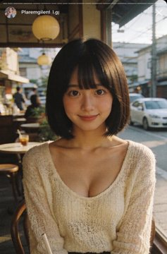
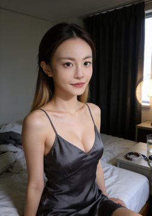
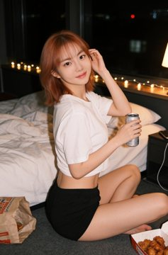
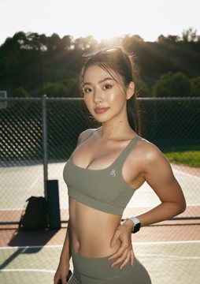
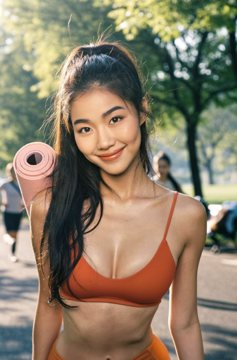
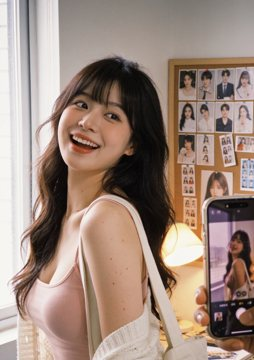
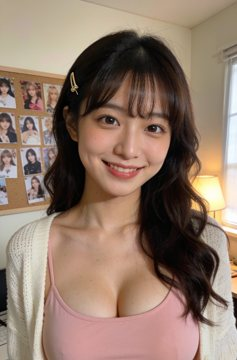
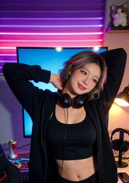
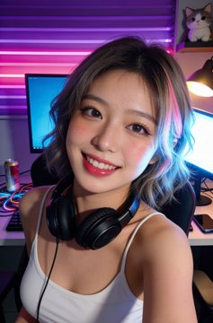
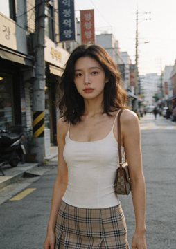
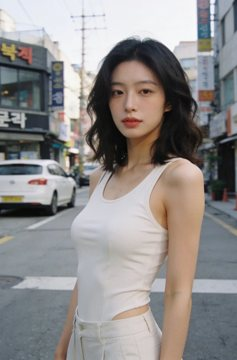
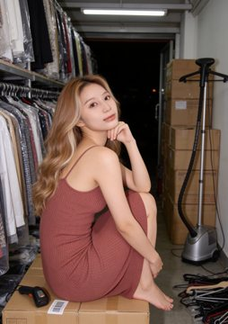
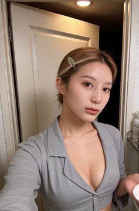
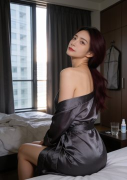
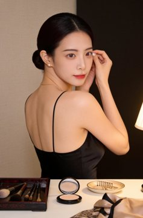
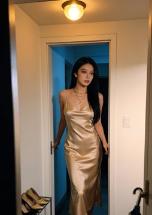
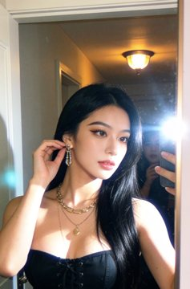
二、候選比較（18 位：12 主角＋2 備選＋4 主要落選）
Iris Chen 陳芯語主角｜1 月
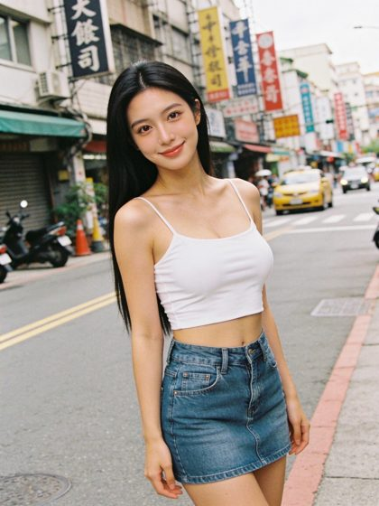
kols/iris-chen/images/training_v1/02_taipei_street_02.webp
原圖

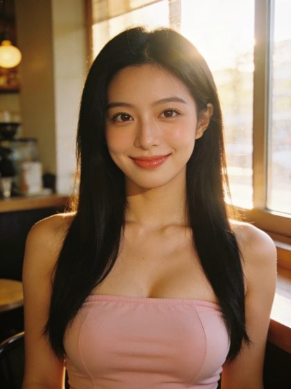
kols/iris-chen/images/training_v1/06_cafe_window_02.webp
原圖

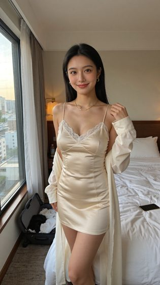
kols/iris-chen/images/dance_clone_u1_hotel/start_frame.png
原圖

- 角色 ID
- iris-chen
- 設定年齡
- 22
- 亞洲背景依據
- kols/iris-chen/profile.json identity.ethnicity=「Taiwanese」/ origin=「Taipei, Taiwan」
- 型錄頁
- https://kol-catalog-production.up.railway.app/p/iris-chen.html
- Soul ID
- 5fe3b6ba-1277-4822-9141-fb06eb3b93a0（ready）
來源 kols/iris-chen/profile.json；SOUL_IDS.json 未收錄（只有 Batch 3）；未在 Higgsfield 端查驗 - 臉部碰撞
- 未量測（不在 Batch 3 的 19 位篩檢內）
- 推薦理由
- 圓臉、大雙眼皮、笑起來最甜的鄰家型；素材最多（repo 79 張，訓練集 1920×2560），從街拍到內衣都有現成圖，尺度可上可下。
- 具體缺點
- 長直黑髮與 rainie 同髮型路線；日間甜美系只有 Seedream 訓練集 14 張（Soul 前），Soul 後的圖多是夜間內衣系列，兩批光線質感不同。
- 與他人差異
- 12 人中臉最圓、妝最淡；與 rainie 的差在臉型（圓 vs 立體）與妝感（裸妝 vs 濃妝）。
- 橫式候選判定
- 可直接用：無明顯瑕疵；窗邊高光略過曝
- 直式候選判定
- 可直接用：背景招牌是 AI 假字（小、可選修）
Luna Tanaka 田中ひな主角｜3 月
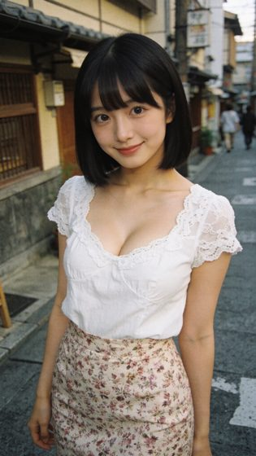
kols/luna-tanaka/images/soul_test_v1/01_tokyo_street_01.png
原圖

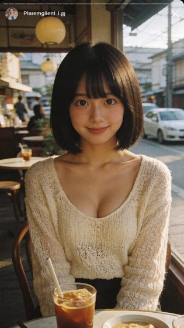
kols/luna-tanaka/images/soul_test_v1/03_cafe_window_01.png
原圖

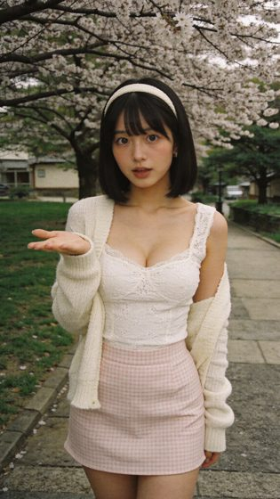
kols/luna-tanaka/images/preflight/LG-04.png
原圖

- 角色 ID
- luna-tanaka
- 設定年齡
- 20
- 亞洲背景依據
- kols/luna-tanaka/profile.json identity.ethnicity=「Japanese」/ origin=「Kyoto, Japan」
- 型錄頁
- https://kol-catalog-production.up.railway.app/p/luna-tanaka.html
- Soul ID
- a3dc13ec-16e7-4990-89c6-9e0461db46ef（ready）
來源 kols/luna-tanaka/profile.json；SOUL_IDS.json 未收錄（只有 Batch 3）；未在 Higgsfield 端查驗 - 臉部碰撞
- 未量測（不在 Batch 3 的 19 位篩檢內）
- 推薦理由
- 黑色齊瀏海短鮑伯、嬌小、日系清純，整組辨識度最高的髮型之一；京都街景、櫻花、浴衣都有現成圖。
- 具體缺點
- 原圖多為 1152×2048，直式滿版解析度邊緣；性感表現偏保守（以低胸上衣為上限）。
- 與他人差異
- 唯一黑色齊瀏海短鮑伯；臉型小圓、五官集中，與 coco 的長捲髮瀏海是兩種甜。
- 橫式候選判定
- 需修圖：左上有假 IG 介面字樣「Plaremgilent 1.g」、右上「×」，半版裁切後仍在框內
- 直式候選判定
- 需修圖：畫面乾淨，但原圖只有 1152 px 寬，直式滿版約 203 ppi（解析度邊緣）
Yuna Kim 김하은主角｜9 月
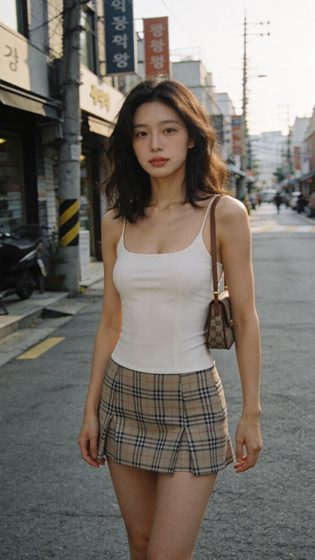
kols/yuna-kim/images/soul_test_v1/street_02.png
原圖

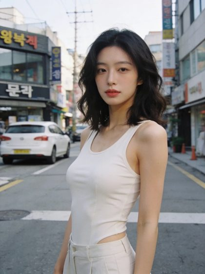
kols/yuna-kim/images/face_reference/ref_01.webp
原圖

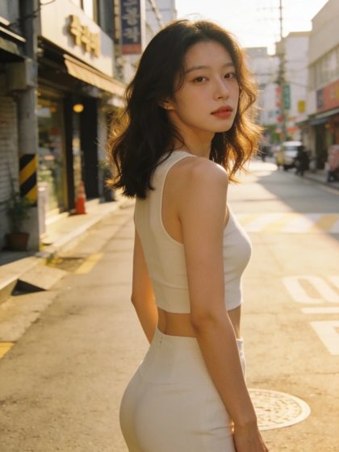
kols/yuna-kim/images/face_reference/ref_03.webp
原圖

- 角色 ID
- yuna-kim
- 設定年齡
- 21
- 亞洲背景依據
- kols/yuna-kim/profile.json identity.ethnicity=「Korean」/ origin=「Seoul, South Korea」
- 型錄頁
- https://kol-catalog-production.up.railway.app/p/yuna-kim.html
- Soul ID
- 235794a5-2eff-45fb-91b4-3232910afefa（ready）
來源 kols/yuna-kim/profile.json；SOUL_IDS.json 未收錄（只有 Batch 3）；未在 Higgsfield 端查驗 - 臉部碰撞
- 未量測（不在 Batch 3 的 19 位篩檢內）
- 推薦理由
- 及肩黑棕微捲、韓系素顏清透、氣質冷靜；首爾街頭的金色斜陽有秋天感。
- 具體缺點
- 直式候選解析度邊緣且有品牌花紋風險；表情變化少（多為微笑或放空）。
- 與他人差異
- 唯一「清透冷淡」的韓系素顏路線；髮長介於 iris 與 luna 之間。
- 橫式候選判定
- 可直接用：無明顯瑕疵；韓文招牌為背景
- 直式候選判定
- 需修圖：肩背包疑似 GG 類老花、裙子近似名牌格紋；原圖 1152 px 寬，直式滿版約 203 ppi
Rainie Hsu 許雷妮主角｜12 月
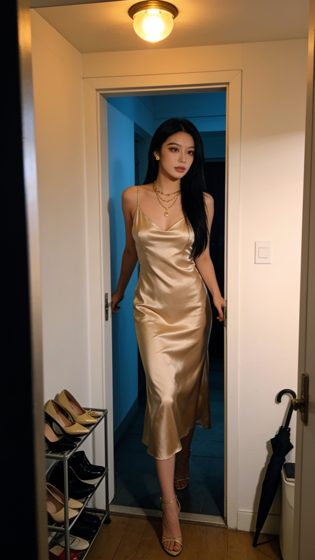
kols/rainie-hsu/images/training_v2/03_doorway_reveal_candid.png
原圖

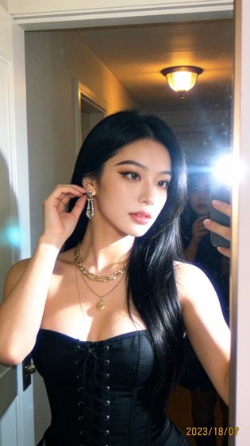
kols/rainie-hsu/images/training_v2/04_leaving_apartment_ccd.png
原圖

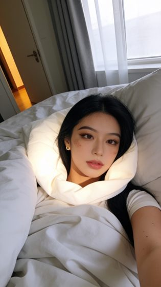
kols/rainie-hsu/images/training_v2/08_bed_selfie_morning.png
原圖

- 角色 ID
- rainie-hsu
- 設定年齡
- 24
- 亞洲背景依據
- kols/rainie-hsu/profile.json identity.ethnicity=「Taiwanese」/ origin=「Taipei, Taiwan」
- 型錄頁
- https://kol-catalog-production.up.railway.app/p/rainie-hsu.html
- Soul ID
- 994e33d2-7df1-47da-8478-7a6fd849fa33（deprecated）、a4a000fe-fd96-4c36-97ff-0df9358a9b47（ready）
來源 kols/rainie-hsu/profile.json；SOUL_IDS.json 未收錄（只有 Batch 3）；未在 Higgsfield 端查驗 - 臉部碰撞
- 未量測（不在 Batch 3 的 19 位篩檢內）
- 推薦理由
- 濃妝立體、夜店女王的成熟性感；金色緞面長洋裝、馬甲適合年末派對月。
- 具體缺點
- 只有 training_v2（Soul v2）這組臉一致；舊資料夾（dance_clone、face_reference round1）是另一張臉，不可混用。多為鏡子自拍與手機入鏡。與 iris 同為長直黑髮，兩人沒有臉部距離量測，需並排目視確認。
- 與他人差異
- 整組妝最濃、輪廓最立體；夜景＋金屬光澤服裝。
- 橫式候選判定
- 需修圖：右下有假日期戳記（2023/18/0?）；鏡面閃光與鏡中反射人影
- 直式候選判定
- 可直接用：人物在門框裡偏小，月份主視覺辨識度中等
- 已剔除圖
- kols/rainie-hsu/images/training_v2/12_hotel_window_selfie.png：窗框十字壓在胸前，裁不掉
- 已剔除圖
- kols/rainie-hsu/images/training_v2/06_perfume_selfie_meitu.png：香水瓶懸空在鎖骨前、沒有手拿
Coco Wu 吳可可主角｜7 月
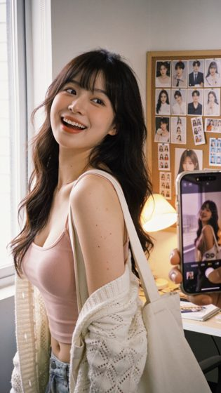
kols/coco-wu/images/face_reference/candidate_03.png
原圖

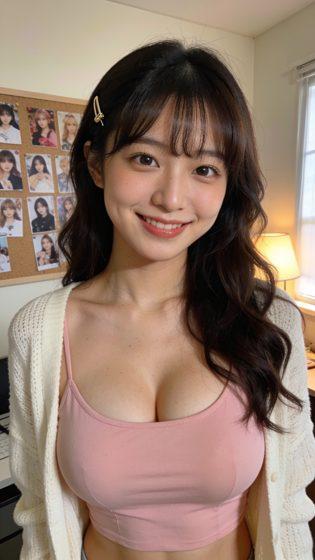
kols/coco-wu/images/face_reference/candidate_01.png
原圖

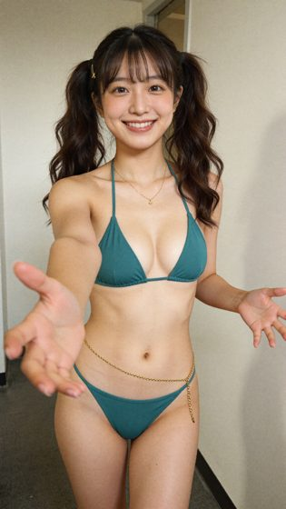
kols/coco-wu/images/dance_clone_r12/start_frame.png
原圖

- 角色 ID
- coco-wu
- 設定年齡
- 20
- 亞洲背景依據
- kols/coco-wu/profile.json identity.ethnicity=「Taiwanese」/ origin=「Taichung, Taiwan」
- 型錄頁
- https://kol-catalog-production.up.railway.app/p/coco-wu.html
- Soul ID
- cf7045dc-4e69-4c56-9621-aa8c40bf39b4（ready）
來源 kols/coco-wu/profile.json；SOUL_IDS.json 未收錄（只有 Batch 3）；未在 Higgsfield 端查驗 - 臉部碰撞
- 未量測（不在 Batch 3 的 19 位篩檢內）
- 推薦理由
- 大笑容、深棕長捲髮配瀏海、宿舍甜心，親近感最強；有比基尼現成圖（尺度 C 參考）。
- 具體缺點
- 校園／宿舍設定，成品必須避開制服元素；不同輪次 face_reference 臉略有差異。
- 與他人差異
- 整組笑得最開的「元氣甜」；與 luna 同有瀏海但髮長、臉型都不同。
- 橫式候選判定
- 可直接用：無明顯瑕疵
- 直式候選判定
- 可直接用：背景手機螢幕顯示她自己的照片（可接受）
- 已剔除圖
- kols/coco-wu/images/face_reference/round1_candidate_04.png：背後多一個黑衣人入鏡；臉部偏糊、與其他圖一致性弱
Mia Huang 黃米亞主角｜8 月
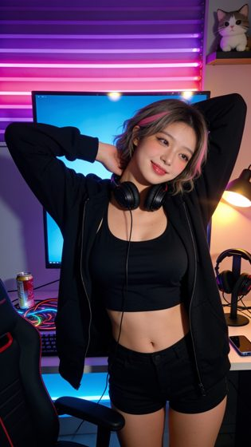
kols/mia-huang/images/training_v1/13_stretch_break_candid.png
原圖

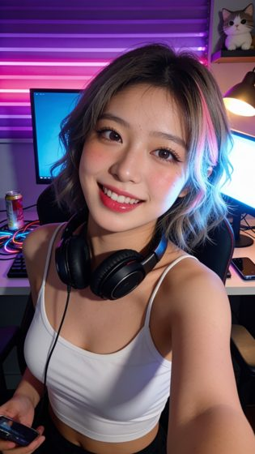
kols/mia-huang/images/training_v1/02_gaming_chair_selfie.png
原圖

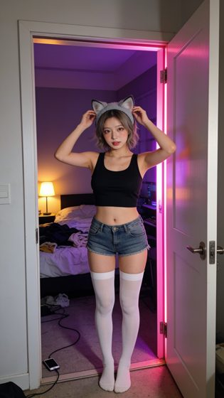
kols/mia-huang/images/training_v1/05_cosplay_candid_doorway.png
原圖

- 角色 ID
- mia-huang
- 設定年齡
- 22
- 亞洲背景依據
- kols/mia-huang/profile.json identity.ethnicity=「Taiwanese」/ origin=「Hsinchu, Taiwan (新竹)」
- 型錄頁
- https://kol-catalog-production.up.railway.app/p/mia-huang.html
- Soul ID
- e2f562ba-2c3f-4e50-b9be-f8854dcb6ab4（ready）
來源 kols/mia-huang/profile.json；SOUL_IDS.json 未收錄（只有 Batch 3）；未在 Higgsfield 端查驗 - 臉部碰撞
- 未量測（不在 Batch 3 的 19 位篩檢內）
- 推薦理由
- 灰金挑粉的捲短髮、電競霓虹房，造型與場景辨識度都高，甜而俏皮。
- 具體缺點
- 不同圖之間臉有些飄（face_reference round1 兩張明顯不同，只用 training_v1）；場景幾乎都是同一間紫光電競房。
- 與他人差異
- 唯一淺色挑染短髮＋霓虹電競場景。
- 橫式候選判定
- 可直接用：霓虹紫光色偏重，印刷色差需打樣確認
- 直式候選判定
- 可直接用：無明顯瑕疵；同樣是紫光
- 已剔除圖
- kols/mia-huang/images/training_v1/05_cosplay_candid_doorway.png：門口全身照人物過小（只當比較圖，不當主視覺）
- 已剔除圖
- kols/mia-huang/images/dance_clone_r1/start_frame.png：水手領＋百褶裙屬校服風格；性感取向的桌曆一律避開制服元素
Vicky Lin 林薇淇主角｜6 月
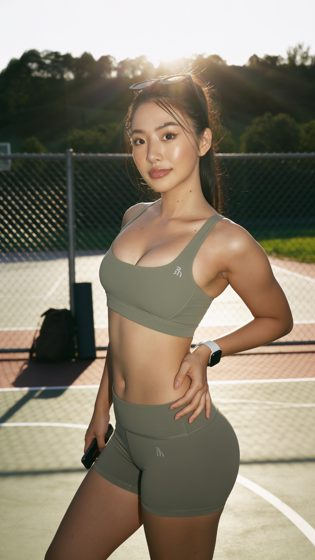
kols/vicky-lin/images/face_reference/v4_anchored_05_3q_halfbody.png
原圖

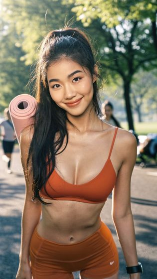
kols/vicky-lin/images/face_reference/v3_01_front_headshot.png
原圖

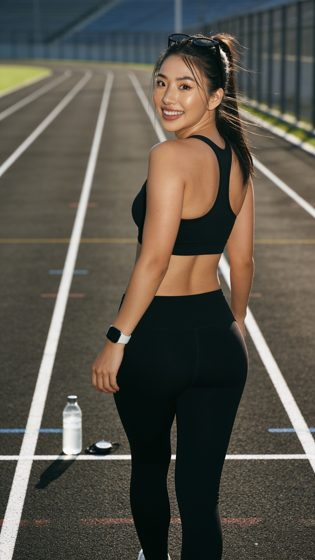
kols/vicky-lin/images/face_reference/v4_anchored_12_front_fullbody_turnback.png
原圖

- 角色 ID
- vicky-lin
- 設定年齡
- 25
- 亞洲背景依據
- kols/vicky-lin/profile.json identity.ethnicity=「Taiwanese」/ origin=「Kaohsiung, Taiwan (高雄)」
- 型錄頁
- https://kol-catalog-production.up.railway.app/p/vicky-lin.html
- Soul ID
- bdb1d879-da36-4c1a-bc63-9f5b49a3e94e（ready）
來源 kols/vicky-lin/profile.json；SOUL_IDS.json 未收錄（只有 Batch 3）；未在 Higgsfield 端查驗 - 臉部碰撞
- 未量測（不在 Batch 3 的 19 位篩檢內）
- 推薦理由
- 小麥膚色、高馬尾、健身身材，性感來自身體線條而非衣著，夏天月份最自然。
- 具體缺點
- 早期 face_reference 幾張臉不同（v3/v4 錨定後才穩定）；原圖混有 1152×2048。
- 與他人差異
- 唯一深膚色、唯一運動體態；整組身形差異最大的一位。
- 橫式候選判定
- 需修圖：短褲上有 Nike 勾勾商標；背景路人
- 直式候選判定
- 可直接用：無明顯瑕疵（運動內衣上的標誌是虛構的）
Rin Ayase 綾瀨凜主角｜11 月
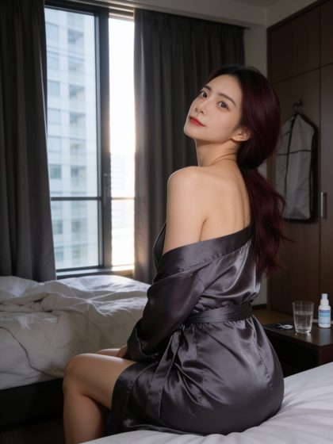
kols/rin-ayase/images/training_v1/train_01.jpg
原圖

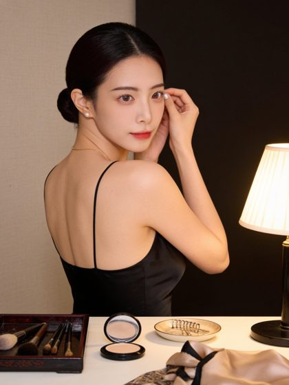
kols/rin-ayase/images/training_v1/train_02.jpg
原圖

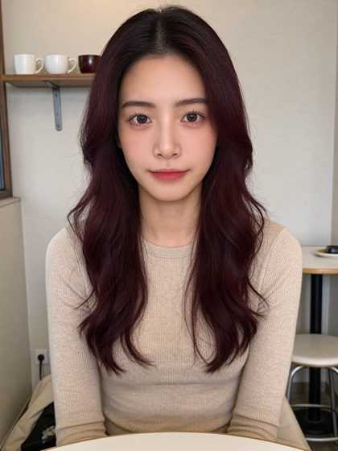
review/soul_pilot/rin-ayase/verify_v1/V1.png
原圖

- 角色 ID
- rin-ayase
- 設定年齡
- 25
- 亞洲背景依據
- kols/rin-ayase/profile.json identity.ethnicity=「日本」/ origin=「東京銀座」
- 型錄頁
- https://kol-catalog-production.up.railway.app/p/rin-ayase.html
- Soul ID
- 34b7fd71-c8dd-4d6a-983e-881b1d012219（production_ready）
來源 kols/rin-ayase/profile.json；SOUL_IDS.json 一致；未在 Higgsfield 端查驗 - 臉部碰撞
- 最近 ruoruo-tang 0.01848；≤0.0220 共 4 組；與主角碰撞 無
- 推薦理由
- 酒紅長捲髮、銀座夜色、裸背與緞面晨袍，成熟性感最強，且不靠暴露。
- 具體缺點
- repo 只有 5 張訓練圖＋6 張 Soul 驗證圖（驗證圖是統一服裝，不適合當主視覺）；直式候選臉偏小。
- 與他人差異
- 唯一酒紅髮色、唯一「夜晚的成熟女人」氣質；盤髮時與長髮時判若兩種造型，但臉一致。
- 橫式候選判定
- 可直接用：無明顯瑕疵
- 直式候選判定
- 可直接用：側身回頭、臉在右上偏小，辨識度中等
Kanon Komori 小森花音主角｜2 月
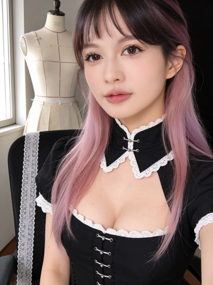
kols/kanon-komori/images/training_v1/train_01.jpg
原圖

kols/kanon-komori/images/training_v1/train_02.jpg
原圖

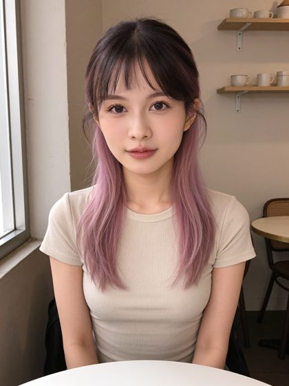
review/soul_pilot/kanon-komori/verify_v1/V1.png
原圖

- 角色 ID
- kanon-komori
- 設定年齡
- 20
- 亞洲背景依據
- kols/kanon-komori/profile.json identity.ethnicity=「日本」/ origin=「東京秋葉原」
- 型錄頁
- https://kol-catalog-production.up.railway.app/p/kanon-komori.html
- Soul ID
- 642ba554-6f87-4be9-9aa7-4b66529b4995（production_ready）
來源 kols/kanon-komori/profile.json；SOUL_IDS.json 一致；未在 Higgsfield 端查驗 - 臉部碰撞
- 最近 miu-shiraishi 0.01734；≤0.0220 共 4 組；與主角碰撞 無
- 推薦理由
- 粉紫長髮＋瀏海、女僕咖啡廳，甜＋性感兼具，2 月的粉色系不必另外套節慶裝。
- 具體缺點
- repo 只有 6 張訓練圖＋6 張驗證圖；女僕裝屬角色制服（不是校服），尺度仍需 Penny 確認。
- 與他人差異
- 唯一粉色系長髮；整組最「二次元偶像」的外型。
- 橫式候選判定
- 可直接用：背景黑板是 AI 假字（可接受）
- 直式候選判定
- 可直接用：無明顯瑕疵；線圈區壓到瀏海上緣（不傷臉）
- 已剔除圖
- kols/kanon-komori/images/training_v1/train_04.jpg：全身站姿人物過小，臉在 204 mm 高的頁面上辨識度不足
Tammy Chou 周語彤主角｜10 月
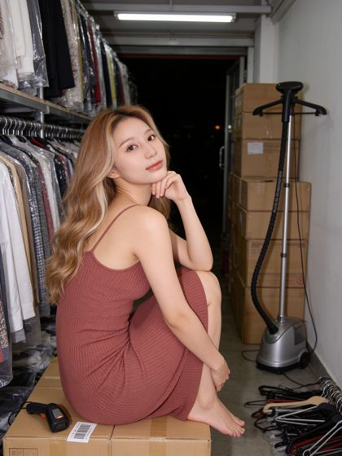
kols/tammy-chou/images/training_v1/train_01.jpg
原圖

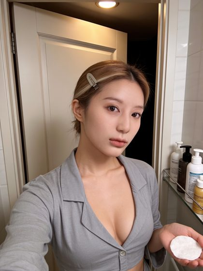
kols/tammy-chou/images/training_v1/train_03.jpg
原圖

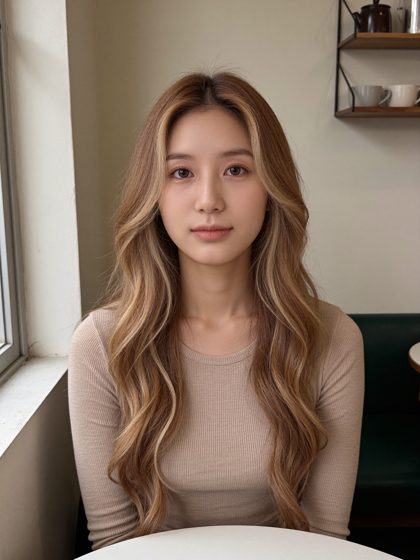
review/soul_pilot/tammy-chou/verify_v1/V1.png
原圖

- 角色 ID
- tammy-chou
- 設定年齡
- 24
- 亞洲背景依據
- kols/tammy-chou/profile.json identity.ethnicity=「台灣」/ origin=「台北五分埔」
- 型錄頁
- https://kol-catalog-production.up.railway.app/p/tammy-chou.html
- Soul ID
- 5069a35a-dd85-4161-8d0f-952bccbe676d（production_ready）
來源 kols/tammy-chou/profile.json；SOUL_IDS.json 一致；未在 Higgsfield 端查驗 - 臉部碰撞
- 最近 ruoruo-tang 0.01886；≤0.0220 共 2 組；與主角碰撞 無
- 推薦理由
- 蜜金色大波浪、網拍老闆娘的時髦感，髮色是整組最亮的一位。
- 具體缺點
- repo 5 張訓練圖只有 train_01 成立；與 peggy-lee（0.02008）有碰撞紀錄（本名單已避開）。
- 與他人差異
- 唯一蜜金髮色；與 angel 的棕金漸層是不同明度。
- 橫式候選判定
- 需補生成：自拍手臂入鏡、頭髮綁起看不出蜜金大波浪、灰襯衫素色，辨識度弱 → 不採用；先取回 daily_v2 原圖（#075/#130 頂樓黑洋裝），不行再補生成
- 直式候選判定
- 可直接用：紙箱上有假條碼標籤（小）
Somi Oh 오소미主角｜5 月
kols/somi-oh/images/training_v1/train_02.jpg
原圖

kols/somi-oh/images/training_v1/train_01.jpg
原圖

review/soul_pilot/somi-oh/verify_v1/V1.png
原圖

- 角色 ID
- somi-oh
- 設定年齡
- 24
- 亞洲背景依據
- kols/somi-oh/profile.json identity.ethnicity=「韓國」/ origin=「釜山」
- 型錄頁
- https://kol-catalog-production.up.railway.app/p/somi-oh.html
- Soul ID
- c7915888-e566-4c9d-bc26-4bf40ab35c4c（production_ready）
來源 kols/somi-oh/profile.json；SOUL_IDS.json 一致；未在 Higgsfield 端查驗 - 臉部碰撞
- 最近 miu-shiraishi 0.01894；≤0.0220 共 2 組；與主角碰撞 無
- 推薦理由
- 銅橘色短髮、釜山吃播的爽朗暖色調，整組最有生活感的一位。
- 具體缺點
- repo 只有訓練圖；夜景多；與 miu、jia 有碰撞紀錄（本名單已避開）。
- 與他人差異
- 唯一銅橘髮色；表情最外放。
- 橫式候選判定
- 可直接用：炸雞紙盒配色像品牌包裝（無可讀 logo）
- 直式候選判定
- 可直接用：吃串燒張嘴，親和但不性感；若要更甜，取回 daily_v2 原圖 #065/#126（海邊白洋裝）
Angel Chiu 邱安晴主角｜4 月
kols/angel-chiu/images/training_v1/train_01.jpg
原圖

kols/angel-chiu/images/training_v1/train_02.jpg
原圖

review/soul_pilot/angel-chiu/verify_v1/V1.png
原圖

- 角色 ID
- angel-chiu
- 設定年齡
- 23
- 亞洲背景依據
- kols/angel-chiu/profile.json identity.ethnicity=「台灣」/ origin=「台北」
- 型錄頁
- https://kol-catalog-production.up.railway.app/p/angel-chiu.html
- Soul ID
- 6e638286-be57-45fa-961e-51bde6cba87f（production_ready）
來源 kols/angel-chiu/profile.json；SOUL_IDS.json 一致；未在 Higgsfield 端查驗 - 臉部碰撞
- 最近 zoey-yeh 0.02361；≤0.0220 共 0 組；與主角碰撞 無
- 推薦理由
- 修長、窄臉尖下巴、棕金漸層長髮；緞面細肩帶洋裝有性感、護理師制服有人設辨識。
- 具體缺點
- repo 只有訓練圖；她與原 11 位（iris、yuna 等）沒有臉部距離量測。
- 與他人差異
- 19 位碰撞表中最「乾淨」的一位（最近是 zoey 0.0236）；唯一高瘦模特兒比例＋棕金漸層。
- 橫式候選判定
- 可直接用：胸前識別證是空白卡（可接受）
- 直式候選判定
- 可直接用：床上有識別證掛繩（可留、可修）
- 已剔除圖
- kols/angel-chiu/images/training_v1/train_03.jpg：自拍手臂佔前景、廣角變形
Wanyin Jiang 江晚吟備選｜可替：rainie-hsu 或 iris-chen（同屬長直黑髮）
kols/wanyin-jiang/images/training_v1/train_04.jpg
原圖

kols/wanyin-jiang/images/training_v1/train_05.jpg
原圖

review/soul_pilot/wanyin-jiang/verify_v1/V1.png
原圖

- 角色 ID
- wanyin-jiang
- 設定年齡
- 23
- 亞洲背景依據
- kols/wanyin-jiang/profile.json identity.ethnicity=「中國」/ origin=「蘇州」
- 型錄頁
- https://kol-catalog-production.up.railway.app/p/wanyin-jiang.html
- Soul ID
- 2e7de3f8-63ee-4302-a684-2245f6c54ea1（production_ready）
來源 kols/wanyin-jiang/profile.json；SOUL_IDS.json 一致；未在 Higgsfield 端查驗 - 臉部碰撞
- 最近 ruoruo-tang 0.02157；≤0.0220 共 1 組；與主角碰撞 無
- 推薦理由
- 旗袍、蘇州園林，東方古典；臉型修長，氣質安靜。
- 具體缺點
- 與 iris／rainie 同為長直黑髮；與 rin 距離 0.02234，只比門檻 0.0220 多一點；差異有相當部分來自旗袍造型，需確認臉本身夠不同。
- 與他人差異
- 唯一古典東方路線。
- 橫式候選判定
- 可直接用：無明顯瑕疵
- 直式候選判定
- 可直接用：全身照人物比例中等
- 已剔除圖
- kols/wanyin-jiang/images/training_v1/train_01.jpg：自拍裁太緊，臉左側出框
Sophia Tseng 曾詩妃備選｜可替：rin-ayase 或 yuna-kim
kols/sophia-tseng/images/training_v1/01_morning_window_candid.png
原圖

kols/sophia-tseng/images/training_v1/08_home_candid_sofa_wine.png
原圖

kols/sophia-tseng/images/training_v1/11_hotel_candid_bed_window.png
原圖

- 角色 ID
- sophia-tseng
- 設定年齡
- 28
- 亞洲背景依據
- kols/sophia-tseng/profile.json identity.ethnicity=「Taiwanese」/ origin=「Taipei, Taiwan」
- 型錄頁
- https://kol-catalog-production.up.railway.app/p/sophia-tseng.html
- Soul ID
- 192562bb-ca64-4615-9515-13d34807857c（ready）
來源 kols/sophia-tseng/profile.json；SOUL_IDS.json 未收錄（只有 Batch 3）；未在 Higgsfield 端查驗 - 臉部碰撞
- 未量測（不在 Batch 3 的 19 位篩檢內）
- 推薦理由
- 28 歲貴婦感、信義區夜景、緞面晨袍，補整組「成熟」的年齡層；training_v1 有 13 張 1440×2560。
- 具體缺點
- face_reference 各輪臉差異大，只能用 training_v1；與 yuna 同為深棕及肩捲髮。
- 與他人差異
- 整組年齡最大的選項（28）；精品生活感。
- 橫式候選判定
- 可直接用：無明顯瑕疵
- 直式候選判定
- 需補生成：側臉背影、臀部入鏡，辨識度弱 → 不採用；training_v1 其他 12 張可再挑
Miu Shiraishi 白石美羽落選
kols/miu-shiraishi/images/training_v1/train_01.jpg
原圖

kols/miu-shiraishi/images/training_v1/train_02.jpg
原圖

review/soul_pilot/miu-shiraishi/verify_v1/V1.png
原圖

- 角色 ID
- miu-shiraishi
- 設定年齡
- 22
- 亞洲背景依據
- kols/miu-shiraishi/profile.json identity.ethnicity=「日本」/ origin=「東京中目黑」
- 型錄頁
- https://kol-catalog-production.up.railway.app/p/miu-shiraishi.html
- Soul ID
- 270c31fa-afd4-4609-b9d5-7302745f137c（production_ready）
來源 kols/miu-shiraishi/profile.json；SOUL_IDS.json 一致；未在 Higgsfield 端查驗 - 臉部碰撞
- 最近 jia-seo 0.01219；≤0.0220 共 7 組；與主角碰撞 [('kanon-komori', 0.01734), ('somi-oh', 0.01894)]
- 推薦理由
- 白金短鮑伯＋瀏海、咖啡店員，個人吸引力高、甜。
- 具體缺點
- 落選主因：與 jia-seo 距離 0.01219（19 位中最接近的一對）、與 kanon 0.01734、與 somi 0.01894、與 nanami 0.0177。要放她，必須同時拿掉 kanon 與 somi。
- 與他人差異
- 唯一白金髮。若 Penny 指定要她，建議替換組合：miu 進、kanon 與 somi 出，再從 wanyin／sophia 補一位。
Jia Seo 서지아落選
kols/jia-seo/images/training_v1/train_01.jpg
原圖

kols/jia-seo/images/training_v1/train_03.jpg
原圖

review/soul_pilot/jia-seo/verify_v1/V1.png
原圖

- 角色 ID
- jia-seo
- 設定年齡
- 22
- 亞洲背景依據
- kols/jia-seo/profile.json identity.ethnicity=「韓國」/ origin=「首爾江南」
- 型錄頁
- https://kol-catalog-production.up.railway.app/p/jia-seo.html
- Soul ID
- ecf19246-c697-419c-b978-fe9373586c19（production_ready）
來源 kols/jia-seo/profile.json；SOUL_IDS.json 一致；未在 Higgsfield 端查驗 - 臉部碰撞
- 最近 miu-shiraishi 0.01219；≤0.0220 共 6 組；與主角碰撞 [('somi-oh', 0.01986)]
- 推薦理由
- 藍黑髮＋薄荷內染、K-pop 舞蹈老師，造型辨識度高。
- 具體缺點
- 落選：與 somi 0.01986、miu 0.01219 碰撞；冷感、甜美度弱；舞蹈體態與 vicky 的運動路線部分重疊。
- 與他人差異
- 唯一薄荷內染。
Peggy Lee 李珮甄落選
kols/peggy-lee/images/training_v1/train_01.jpg
原圖

kols/peggy-lee/images/training_v1/train_05.jpg
原圖

review/soul_pilot/peggy-lee/verify_v1/V1.png
原圖

- 角色 ID
- peggy-lee
- 設定年齡
- 24
- 亞洲背景依據
- kols/peggy-lee/profile.json identity.ethnicity=「馬來西亞華裔（Chinese-Malaysian）」/ origin=「吉隆坡（華裔）」
- 型錄頁
- https://kol-catalog-production.up.railway.app/p/peggy-lee.html
- Soul ID
- 3e3f4f72-2a89-4f05-af61-0c6701c97a5c（production_ready）
來源 kols/peggy-lee/profile.json；SOUL_IDS.json 一致；未在 Higgsfield 端查驗 - 臉部碰撞
- 最近 angeline-kwee 0.01788；≤0.0220 共 3 組；與主角碰撞 [('tammy-chou', 0.02008)]
- 推薦理由
- 酒紅大捲髮＋灰挑染、改裝車行銷，帥氣性感。
- 具體缺點
- 落選：與 tammy 0.02008、angeline 0.01788 碰撞；酒紅系髮色與 rin 撞色。
- 與他人差異
- 唯一大捲髮＋車廠場景。
Yerin Han 한예린落選
kols/yerin-han/images/training_v1/train_01.jpg
原圖

kols/yerin-han/images/training_v1/train_02.jpg
原圖

review/soul_pilot/yerin-han/verify_v1/V1.png
原圖

- 角色 ID
- yerin-han
- 設定年齡
- 26
- 亞洲背景依據
- kols/yerin-han/profile.json identity.ethnicity=「韓國」/ origin=「首爾」
- 型錄頁
- https://kol-catalog-production.up.railway.app/p/yerin-han.html
- Soul ID
- 8c447a79-769f-4520-a538-cfb48fef6163（production_ready）
來源 kols/yerin-han/profile.json；SOUL_IDS.json 一致；未在 Higgsfield 端查驗 - 臉部碰撞
- 最近 sydney-leong 0.01722；≤0.0220 共 4 組；與主角碰撞 [('rin-ayase', 0.02085)]
- 推薦理由
- 亞麻棕長髮、高爾夫教練，運動甜美。
- 具體缺點
- 落選：與 rin 0.02085、sydney 0.01722、emma 0.01851、nanami 0.0194 碰撞；運動路線與 vicky 重疊。
- 與他人差異
- 唯一高爾夫場景。
三、裁切與有效印刷解析度（12 主角＋2 備選）
紅＝線圈區（上緣 12 mm 畫布，含 2 mm 出血）；藍＝假設的日期條；白框＝裁切線（出血內縮 2 mm）。ppi = 裁切後實際像素 ÷ 框寬英吋，沒有任何放大。分級是本專案的工作判準，不是廠商要求。
| 月 | 人設 | 橫式滿版 204×155 | 橫式半版 102×155 | 直式滿版 144×204 | 預覽 |
|---|---|---|---|---|---|
| 1 | Iris Chen | 239 ppi（邊緣） 1920×2560 不採用（現有直幅原圖） | 420 ppi（充裕） 1920×2560 可直接用 | 319 ppi（充裕） 1920×2560 可直接用 | |
| 2 | Kanon Komori | 215 ppi（邊緣） 1728×2304 不採用（現有直幅原圖） | 378 ppi（充裕） 1728×2304 可直接用 | 287 ppi（可） 1728×2304 可直接用 | |
| 3 | Luna Tanaka | 143 ppi（不足） 1152×2048 不採用（現有直幅原圖） | 287 ppi（可） 1152×2048 需修圖 | 203 ppi（邊緣） 1152×2048 需修圖 | |
| 4 | Angel Chiu | 215 ppi（邊緣） 1728×2304 不採用（現有直幅原圖） | 378 ppi（充裕） 1728×2304 可直接用 | 287 ppi（可） 1728×2304 可直接用 | |
| 5 | Somi Oh | 215 ppi（邊緣） 1728×2304 不採用（現有直幅原圖） | 378 ppi（充裕） 1728×2304 可直接用 | 287 ppi（可） 1728×2304 可直接用 | |
| 6 | Vicky Lin | 143 ppi（不足） 1152×2048 不採用（現有直幅原圖） | 287 ppi（可） 1152×2048 需修圖 | 254 ppi（可） 1440×2560 可直接用 | |
| 7 | Coco Wu | 179 ppi（不足） 1440×2560 不採用（現有直幅原圖） | 359 ppi（充裕） 1440×2560 可直接用 | 254 ppi（可） 1440×2560 可直接用 | |
| 8 | Mia Huang | 179 ppi（不足） 1440×2560 不採用（現有直幅原圖） | 359 ppi（充裕） 1440×2560 可直接用 | 254 ppi（可） 1440×2560 可直接用 | |
| 9 | Yuna Kim | 215 ppi（邊緣） 1728×2304 不採用（現有直幅原圖） | 378 ppi（充裕） 1728×2304 可直接用 | 203 ppi（邊緣） 1152×2048 需修圖 | |
| 10 | Tammy Chou | 215 ppi（邊緣） 1728×2304 不採用（現有直幅原圖） | 378 ppi（充裕） 1728×2304 需補生成 | 287 ppi（可） 1728×2304 可直接用 | |
| 11 | Rin Ayase | 215 ppi（邊緣） 1728×2304 不採用（現有直幅原圖） | 378 ppi（充裕） 1728×2304 可直接用 | 287 ppi（可） 1728×2304 可直接用 | |
| 12 | Rainie Hsu | 179 ppi（不足） 1440×2560 不採用（現有直幅原圖） | 359 ppi（充裕） 1440×2560 需修圖 | 254 ppi（可） 1440×2560 可直接用 | |
| 備 | Wanyin Jiang | 215 ppi（邊緣） 1728×2304 不採用（現有直幅原圖） | 378 ppi（充裕） 1728×2304 可直接用 | 287 ppi（可） 1728×2304 可直接用 | |
| 備 | Sophia Tseng | 179 ppi（不足） 1440×2560 不採用（現有直幅原圖） | 359 ppi（充裕） 1440×2560 可直接用 | 254 ppi（可） 1440×2560 需補生成 |
四、篩選前即排除
| 人設 | 原因 |
|---|---|
| nico-tsai | 灰棕短鮑伯、冷調時髦，不屬甜美方向；Phase D 待裁決；沒有納入 19 位碰撞篩檢。 |
| zoey-yeh、zhiyi-shen、nanami-fujiwara、cheryl-soh | 都是長直黑髮，與 iris／rainie 同一類；nanami 有 9 組碰撞（含 kanon 0.01741）、cheryl 6 組、zhiyi 6 組。 |
| ruoruo-tang、sydney-leong | 碰撞組數最多（11、10），臉最「平均」，最不利於展示差異。 |
| emma-kao | 主播的知性成熟路線；與 rin 0.01863 碰撞。 |
| angeline-kwee | 奶茶灰棕長捲髮與 tammy、angel 的髮色區間重疊；與 peggy 0.01788。 |
| wendy-yeo | 銀灰鮑伯辨識度很高，但冷酷中性，不符甜美方向；若 Penny 想要一位「反差冷感」可回頭考慮（與 12 位主角無碰撞）。 |
| ananya-kapoor | 印度旁遮普，屬亞洲；本輪以東亞甜美方向為準而未入選。是否納入南亞以拉開差異，屬 Penny 的美感判斷，列為可討論，不當作硬性排除。 |
| camille-dupont、aaliya-okonkwo | 設定為法國、拉丁裔，非亞洲人設。 |
| faye-tan、rachel-ong、kai-luo | 屬 showgame-kol／Buildup_KOL，本 repo 沒有設定文件與 Soul ID；型錄圖是紀實、冷調風格（設定 30、34、27 歲），不符「漂亮、性感、甜美」。 |
| nova-lin | 型錄 ethnicity 欄為空、設定是 AI 數位人，亞洲背景無法用設定文件查證；Soul ID 未確認。 |
| xiaoxiao-tan、loima-cheung、leon-lim | 型錄現有圖皆為男性形象（xiaoxiao-tan 是否為設定錯置，未確認）。 |
主角中屬 Batch 3 者的最近配對：rin-ayase↔kanon-komori 0.02302；kanon-komori↔somi-oh 0.02794；rin-ayase↔somi-oh 0.02960（皆 > 0.0220）。原 11 位與 Batch 3 之間沒有量測，臉部差異以目視判斷。